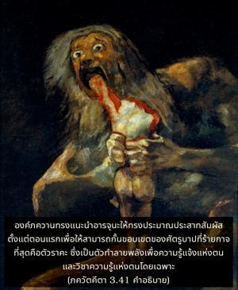
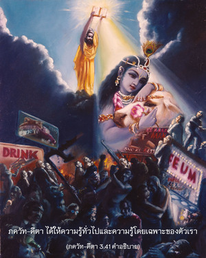

ฉะนั้น โอ้ อรฺชุน ผู้ดีเลิศแห่ง ภารต ในตอนแรกจงกั้นขอบเครื่องหมายแห่งบาปอันยิ่งใหญ่นี้ (ราคะ) ด้วยการประมาณประสาทสัมผัส และจงสังหารผู้ทำลายวิชาความรู้ และความรู้แจ้งแห่งตนนี้เสีย


องค์ภควานฺทรงแนะนำ อรฺชุน ให้ทรงประมาณประสาทสัมผัสตั้งแต่ตอนแรก เพื่อให้สามารถกั้นขอบเขตของศัตรูบาปที่ร้ายกาจที่สุด คือตัวราคะซึ่งเป็นตัวทำลายพลังเพื่อความรู้แจ้งแห่งตนและวิชาความรู้แห่งตนโดยเฉพาะ ชฺญาน หมายถึงวิชาความรู้แห่งตนซึ่งแตกต่างจากความรู้ที่ไม่ใช่ตน อีกนัยหนึ่งคือความรู้ที่ว่าดวงวิญญาณไม่ใช่ร่างกาย วิชฺญาน หมายถึงความรู้โดยเฉพาะ คือรู้ถึงสถานภาพพื้นฐานของดวงวิญญาณและความสัมพันธ์ที่ตนเองมีต่อดวงอภิวิญญาณสูงสุด ได้อธิบายไว้ใน ศฺรีมทฺ-ภาควตมฺ (2.9.31) ดังนี้
ชฺญานํ ปรม-คุหฺยํ เม
ยทฺ วิชฺญาน-สมนฺวิตมฺ
ส-รหสฺยํ ตทฺ-องฺคํ จ
คฺฤหาณ คทิตํ มยา
“ความรู้แห่งตนเองและความรู้แห่งองค์ภควานฺเป็นความรู้ที่ลับเฉพาะและลึกซึ้งมาก ความรู้เช่นนี้และความรู้แจ้งโดยเฉพาะนี้สามารถเข้าใจได้หากองค์ภควานฺทรงอธิบายทุกแง่ทุกมุมด้วยพระองค์เอง” ภควัท-คีตา ได้ให้ความรู้ทั่วไปและความรู้โดยเฉพาะของตัวเรา สิ่งมีชีวิตเป็นละอองอณูขององค์ภควานฺ ฉะนั้นชีวิตเรามีไว้เพียงเพื่อรับใช้พระองค์เท่านั้น จิตสำนึกเช่นนี้เรียกว่ากฺฤษฺณจิตสำนึก จากตอนเริ่มต้นของชีวิตต้องเรียนรู้กฺฤษฺณจิตสำนึกนี้ หลังจากนั้นเราอาจมีกฺฤษฺณจิตสำนึกโดยสมบูรณ์และปฏิบัติตนตามนั้น
ราคะเป็นความวิปริตที่สะท้อนมาจากความรักแห่งองค์ภควานฺอันเป็นธรรมชาติของทุกๆชีวิต หากเราได้รับการศึกษาในกฺฤษฺณจิตสำนึกตั้งแต่แรกเริ่ม ความรักองค์ภควานฺโดยธรรมชาติไม่สามารถเสื่อมทรามไปเป็นราคะได้ เมื่อความรักแห่งองค์ภควานฺเสื่อมไปเป็นราคะจะยากมากที่จะให้กลับคืนมาสู่สภาวะปรกติดังเดิม แต่กฺฤษฺณจิตสำนึกมีพลังมากแม้แต่ผู้เริ่มต้นช้าก็ยังสามารถกลายมาเป็นผู้รักองค์ภควานฺได้ด้วยการปฏิบัติตามหลักธรรมแห่งการอุทิศตนเสียสละรับใช้ ฉะนั้นไม่ว่าจะอยู่ในช่วงไหนของชีวิต หรือเริ่มจากจุดที่เข้าใจความฉุกเฉินนี้เราสามารถเริ่มประมาณประสาทสัมผัสในกฺฤษฺณจิตสำนึกด้วยการอุทิศตนเสียสละรับใช้องค์ภควานฺ และเปลี่ยนจากราคะไปเป็นความรักพระองค์ ซึ่งเป็นระดับที่สมบูรณ์สูงสุดของชีวิตมนุษย์